Life in an urban jungle - 1
2022 Aug 21
See all posts
Life in an urban jungle - 1
I live in a jungle! A jungle made of concrete often called Delhi and it's my home.
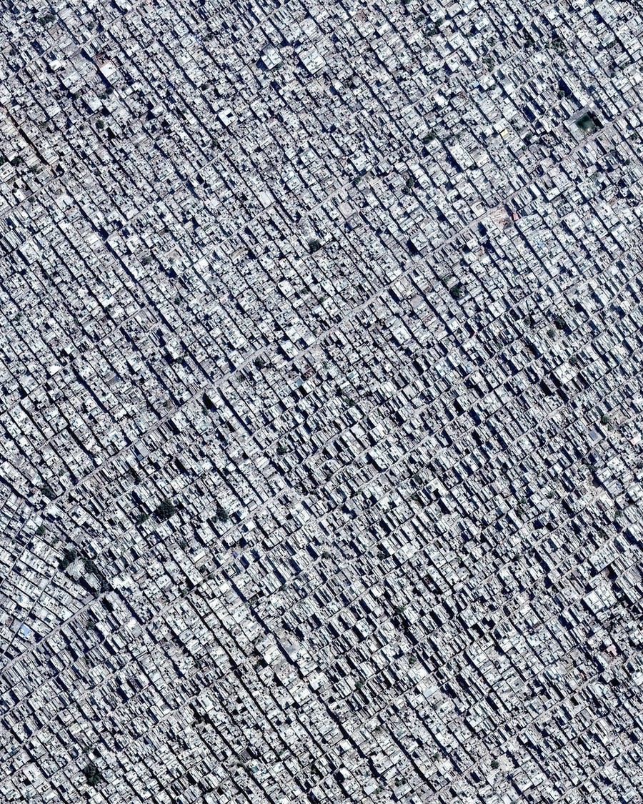
Aerial view of Uttam Nagar, Delhi. One of the more densely populated area.
I am annoyed by cars. Have you ever felt anxious listening to your alarm sound? Go to your phone's alarm setting and play the sound. It always makes my anxious. I had a similar experience when I listened to a recorded sound of traffic.
Here, in the jungle, the roads are full of horns. Not animal horns but car horns. The animals on the road honk continuously. Many glue their thumb to the horn as if it gives them extra speed. Many think of their horn as a siren and that everyone will somehow move aside if they keep honking. One of my neighbours, who owns a big Innova car uses it as a doorbell. He will use it when he's about to park his car. On top of all this, scooters modify their horns to be louder or on par with cars. They often startle me.
I am on a two wheeler and stop at a red light. I took a vow when I got my licence. If my bike is 1m wide and there is a gap of 1.1m wide. I will squeeze my bike through it. This means, I don't stop at the back of a red light. I dodge the cars to reach the front. It's survival of the fittest. It is where all my fellow bikers are. Waiting at the traffic light is not an empty time but it is a preparation for war. A war that happens on the road with automobiles as weapons. Being in the front we have a clear view of the timer. When the timer hits 10 we turn on the engine and like an animal our bikes roar. Ready to race off on zero. If I don't move immediately after the green light then I will get hit with a wall of angry horns.
There are no footpaths to walk. At many places I literally have to walk in traffic. Not alongside it but in between it. In my jungle, cars take up all the space. If buildings are the trees, cars are the weed. There's so much traffic that we keep widening the roads. Often this comes at the expense of footpaths.
There's no space to park your car. It's a must for newly built houses to turn their ground floors into parking. It's still not enough. Not long ago, an unknown car was parked in front of my neighbour's house. They saw it from their 3rd floor room's window, took the lift, came down and deflated the tires of the parked car without any hesitation. Let me emphasise, the house didn't have any boards of no parking. They just did it out of spite. They saw me see them but their faces didn't show any signs of guilt. I wonder, are we animals without empathy? Later it was found that the deflated car belonged to a guest who came to visit their loved ones in the neighbourhood. I can only imagine the hassle the car owner had to go through.
The population of Delhi has grown 2x in the last 20 years. We are the world's second largest city (after Tokyo). We keep widening the roads. We keep buying bigger cars. It is not unheard of for each family member to own separate cars. It leads to air pollution, climate change, noise pollution and very high traffic. We use a rule of thumb here that any commute, no matter the distance, will take approximately 1 hour.
There are very few places in Delhi NCR that have footpaths. In Noida, the place of utter chaos, the government made a cycling track on a few select roads. These are roads that remain empty. After a year or two the track got converted into car parking. A full commercial parking where you are charged per hour. Like Noida, I can see footpaths all over the state being taken over.
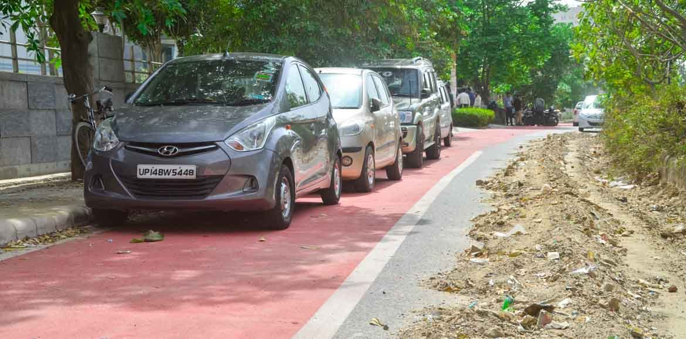
Cars parked on cycling track
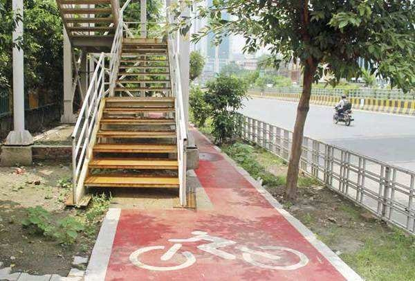
The state of public planning. A foot over bridge in the middle of the track.
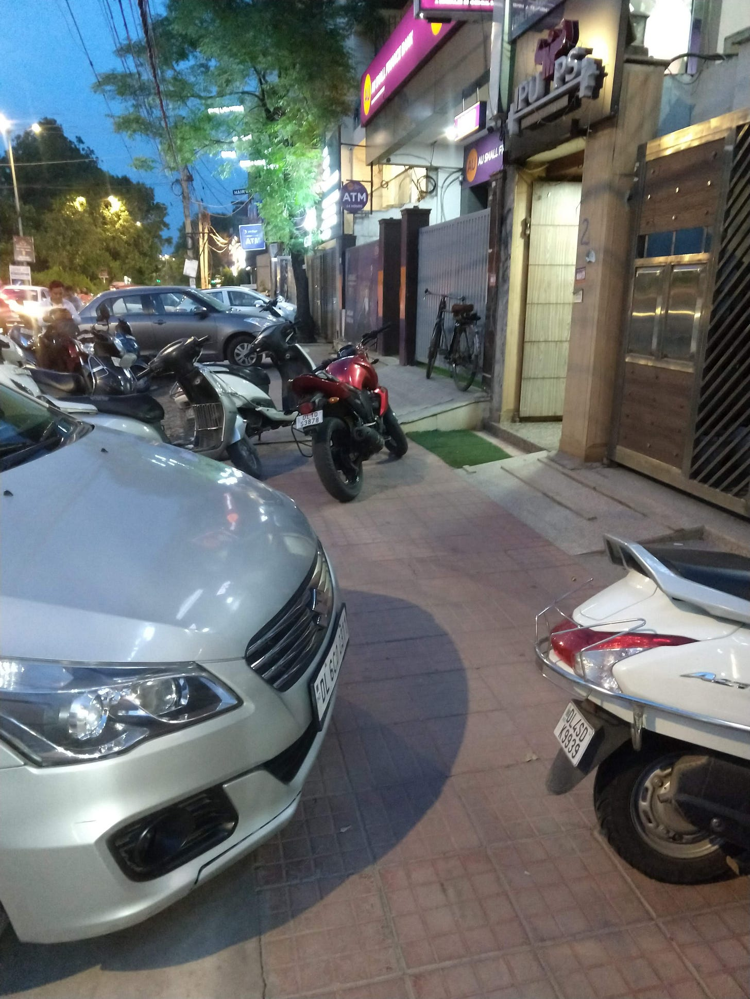
A footpath taken over by vehicles
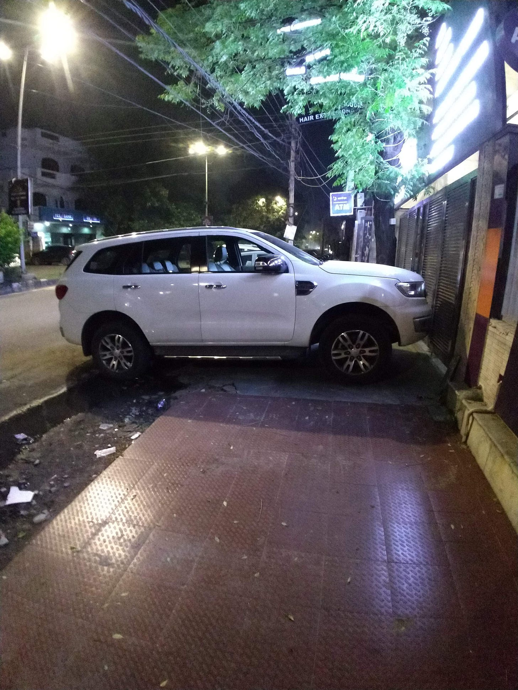
This idiot always parks their car on the footpath. They could have parked on the road like other people. Where am I supposed to walk?
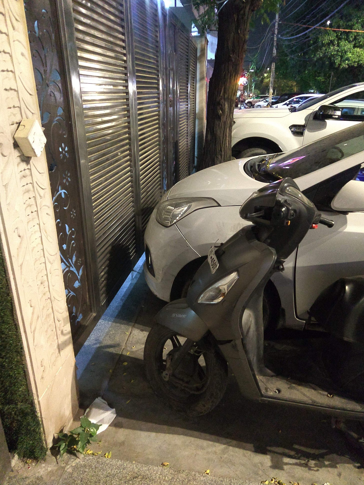
The same footpath as above. Not an inch of space is left. The ground floor of the house i.e. behind the steel gate is a parking space. However, the idiot never uses it.
Dogs play the status game when they pee. They try to pee as high as possible. It's a signal to the other dogs in the area about their size. A larger dog will be able to pee higher. Many dogs perform a complete handstand while peeing. Animals in my jungle also play the status game. A bigger car signals more wealth. Similar to dogs, we animals also give our best to win this game. Are there any winners in this game? Topic for another day. EMIs are the steroids of this game. They can mess with you but they surely help you score big. A person earning 50K per month is willing to pay 20K per month to be able to keep their car.
One of the consequences of the status game is that our cars have become bigger. From what I have observed on the roads, the sale of SUVs such as Hyundai Creta, MG Hector, Kia and luxury cars such as Range Rover, Fortuner, Mercedes and BMW have increased. People are now spending more money on cars. 20+ lakh cars are becoming increasingly common each year.
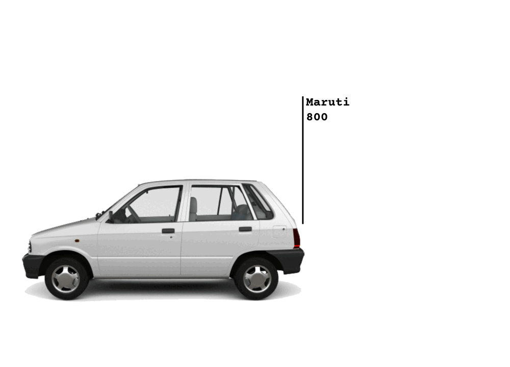
Growth of car size in the past few decades
In a jungle trees have to fight for sunlight, similarly in this urban jungle our buildings have to fight for light too. There are a lot of factors at play here that shape our life including greed of people, empty souls of corporations and influx of immigrants to name a few. The devotion towards fast growth has made us into machines. Humans are slow and creative whereas machines are fast and deterministic. Wouldn't you call a real estate developer a machine? Have a look at their work - shopping malls and high rise housing society? Each building is a copy of the previous one. The machine doesn't stop to think and ask if we have the need for it? The machine just produces. Do you like shopping malls or do you like markets? This is a topic to explore another day.
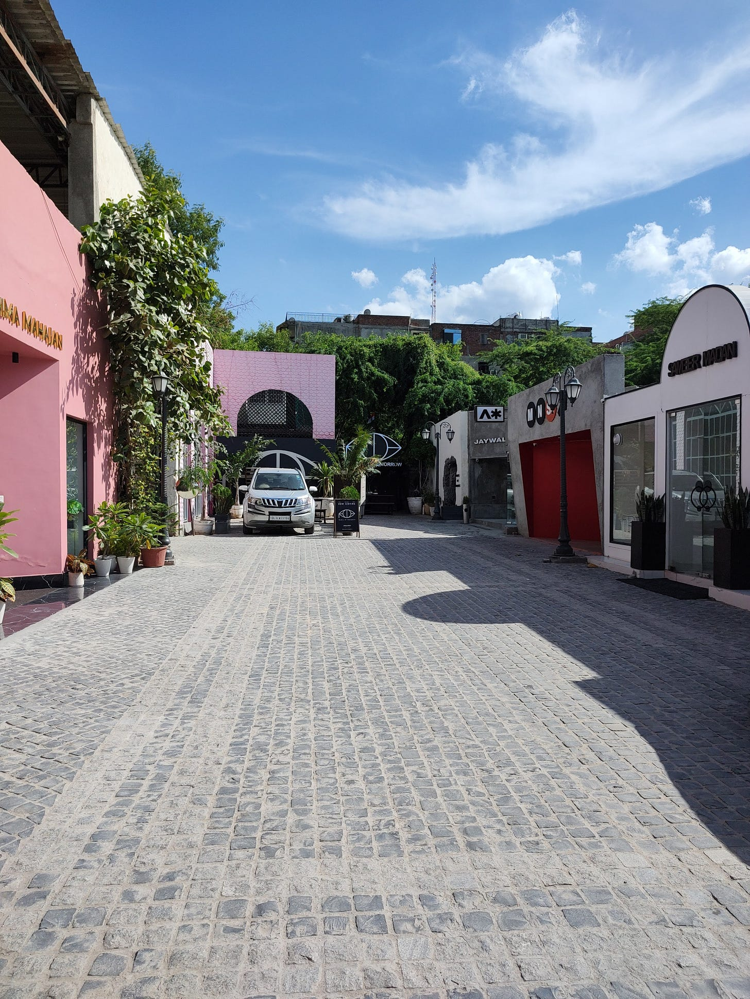
A market in Delhi. In my opinion it looks more beautiful than any mall in the city?
Life in an urban jungle - 1
2022 Aug 21 See all postsI live in a jungle! A jungle made of concrete often called Delhi and it's my home.
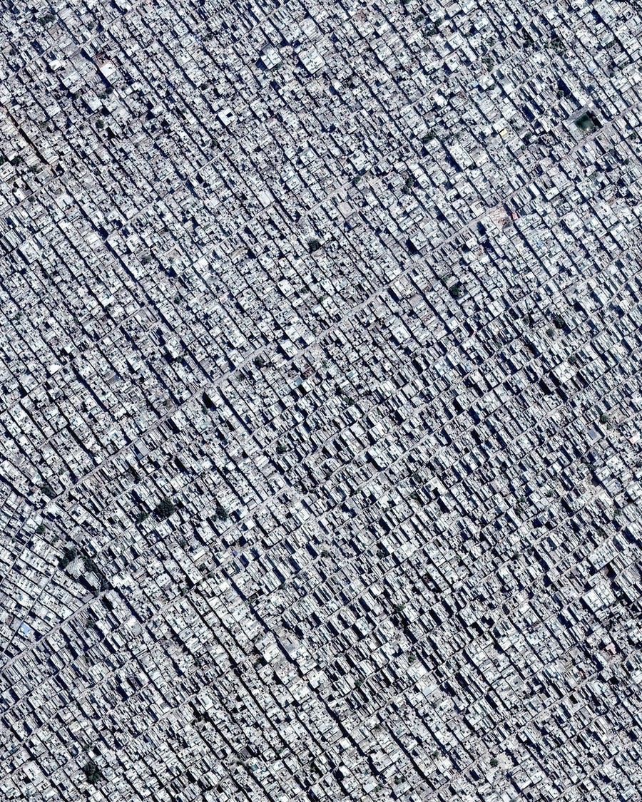
I am annoyed by cars. Have you ever felt anxious listening to your alarm sound? Go to your phone's alarm setting and play the sound. It always makes my anxious. I had a similar experience when I listened to a recorded sound of traffic.
Here, in the jungle, the roads are full of horns. Not animal horns but car horns. The animals on the road honk continuously. Many glue their thumb to the horn as if it gives them extra speed. Many think of their horn as a siren and that everyone will somehow move aside if they keep honking. One of my neighbours, who owns a big Innova car uses it as a doorbell. He will use it when he's about to park his car. On top of all this, scooters modify their horns to be louder or on par with cars. They often startle me.
I am on a two wheeler and stop at a red light. I took a vow when I got my licence. If my bike is 1m wide and there is a gap of 1.1m wide. I will squeeze my bike through it. This means, I don't stop at the back of a red light. I dodge the cars to reach the front. It's survival of the fittest. It is where all my fellow bikers are. Waiting at the traffic light is not an empty time but it is a preparation for war. A war that happens on the road with automobiles as weapons. Being in the front we have a clear view of the timer. When the timer hits 10 we turn on the engine and like an animal our bikes roar. Ready to race off on zero. If I don't move immediately after the green light then I will get hit with a wall of angry horns.
There are no footpaths to walk. At many places I literally have to walk in traffic. Not alongside it but in between it. In my jungle, cars take up all the space. If buildings are the trees, cars are the weed. There's so much traffic that we keep widening the roads. Often this comes at the expense of footpaths.
There's no space to park your car. It's a must for newly built houses to turn their ground floors into parking. It's still not enough. Not long ago, an unknown car was parked in front of my neighbour's house. They saw it from their 3rd floor room's window, took the lift, came down and deflated the tires of the parked car without any hesitation. Let me emphasise, the house didn't have any boards of no parking. They just did it out of spite. They saw me see them but their faces didn't show any signs of guilt. I wonder, are we animals without empathy? Later it was found that the deflated car belonged to a guest who came to visit their loved ones in the neighbourhood. I can only imagine the hassle the car owner had to go through.
The population of Delhi has grown 2x in the last 20 years. We are the world's second largest city (after Tokyo). We keep widening the roads. We keep buying bigger cars. It is not unheard of for each family member to own separate cars. It leads to air pollution, climate change, noise pollution and very high traffic. We use a rule of thumb here that any commute, no matter the distance, will take approximately 1 hour.
There are very few places in Delhi NCR that have footpaths. In Noida, the place of utter chaos, the government made a cycling track on a few select roads. These are roads that remain empty. After a year or two the track got converted into car parking. A full commercial parking where you are charged per hour. Like Noida, I can see footpaths all over the state being taken over.
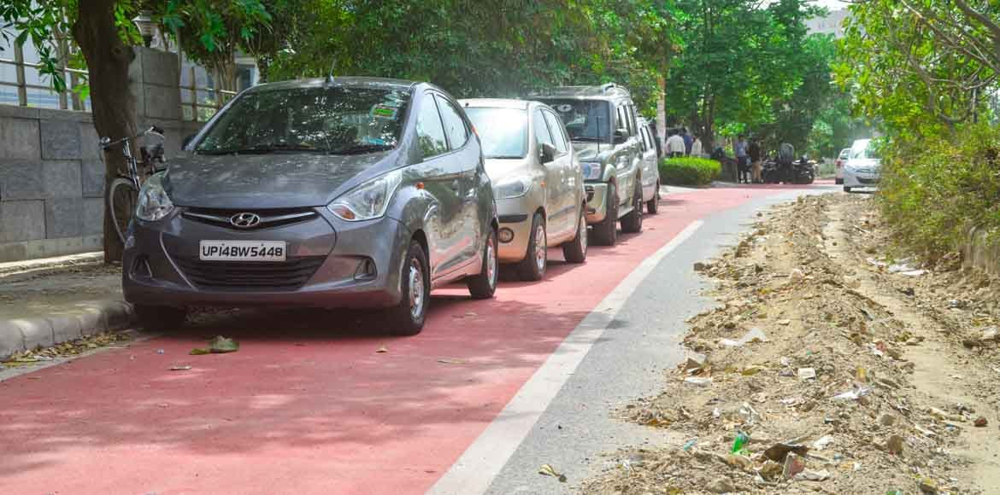
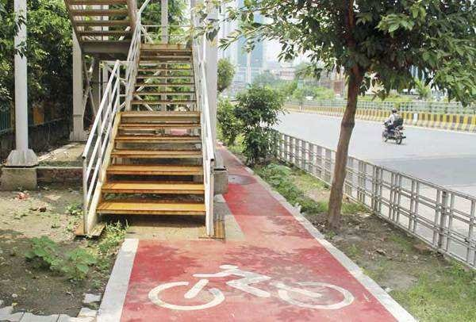
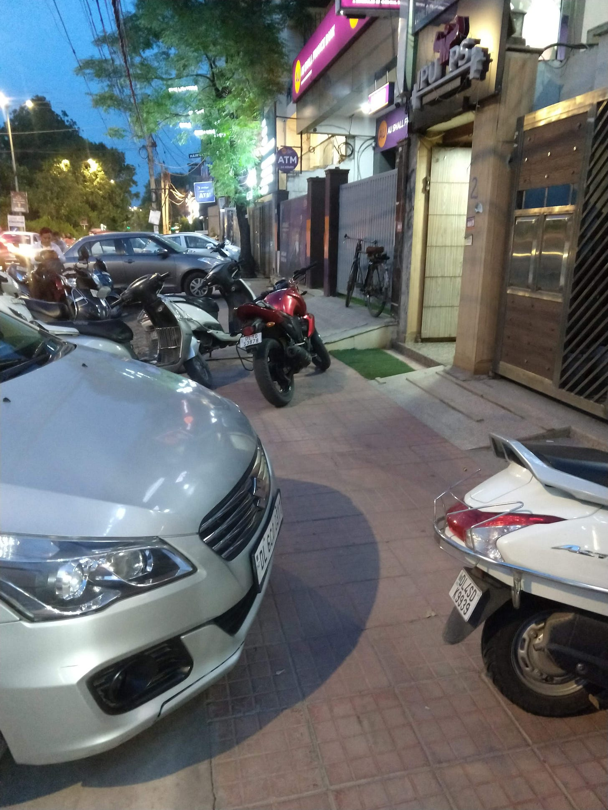
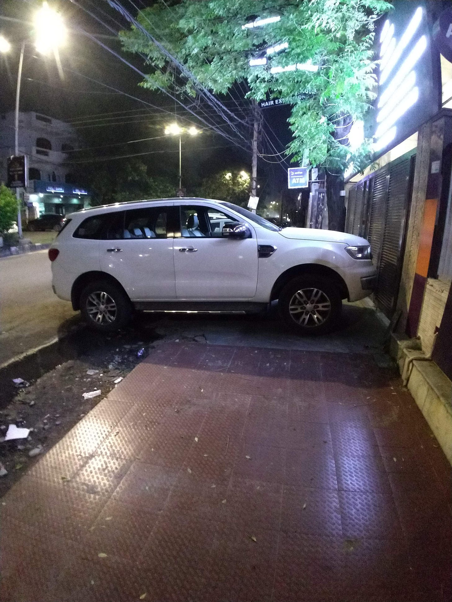
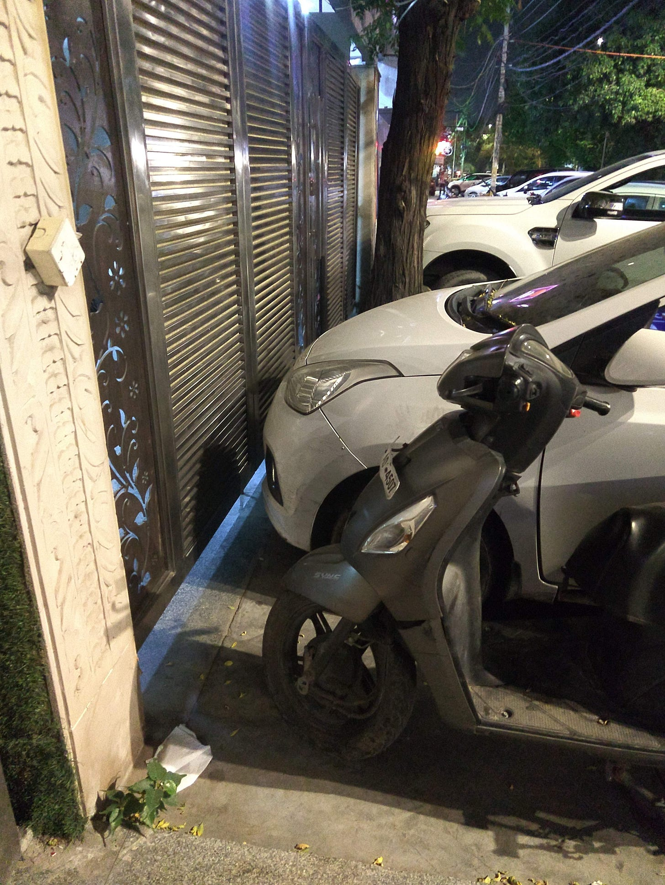
Dogs play the status game when they pee. They try to pee as high as possible. It's a signal to the other dogs in the area about their size. A larger dog will be able to pee higher. Many dogs perform a complete handstand while peeing. Animals in my jungle also play the status game. A bigger car signals more wealth. Similar to dogs, we animals also give our best to win this game. Are there any winners in this game? Topic for another day. EMIs are the steroids of this game. They can mess with you but they surely help you score big. A person earning 50K per month is willing to pay 20K per month to be able to keep their car.
One of the consequences of the status game is that our cars have become bigger. From what I have observed on the roads, the sale of SUVs such as Hyundai Creta, MG Hector, Kia and luxury cars such as Range Rover, Fortuner, Mercedes and BMW have increased. People are now spending more money on cars. 20+ lakh cars are becoming increasingly common each year.
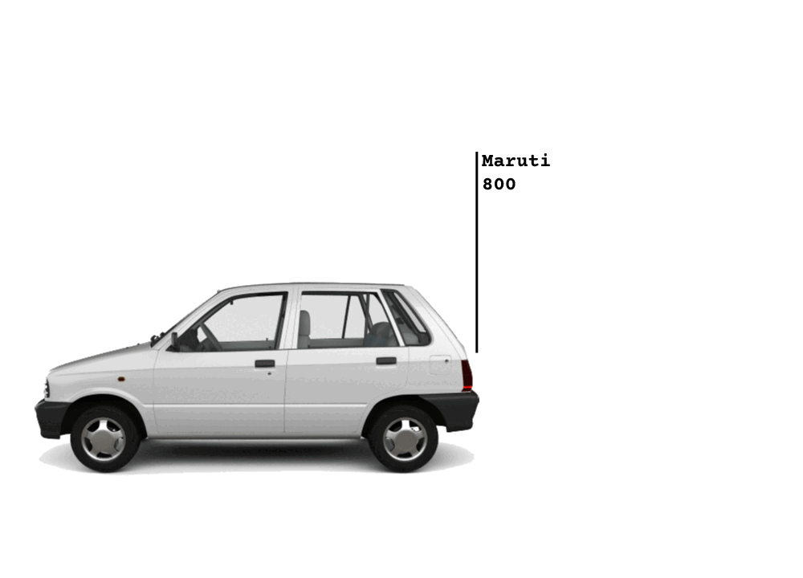
In a jungle trees have to fight for sunlight, similarly in this urban jungle our buildings have to fight for light too. There are a lot of factors at play here that shape our life including greed of people, empty souls of corporations and influx of immigrants to name a few. The devotion towards fast growth has made us into machines. Humans are slow and creative whereas machines are fast and deterministic. Wouldn't you call a real estate developer a machine? Have a look at their work - shopping malls and high rise housing society? Each building is a copy of the previous one. The machine doesn't stop to think and ask if we have the need for it? The machine just produces. Do you like shopping malls or do you like markets? This is a topic to explore another day.
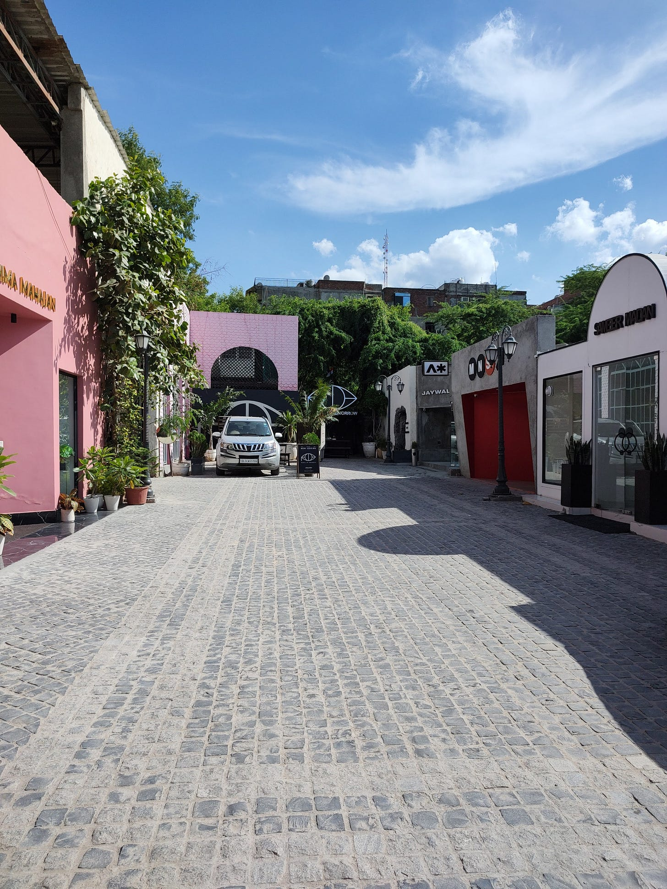